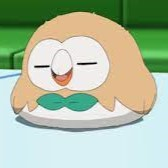

About Me
My Introduction

My name is Vedrico, I am 12 years old. I wanted to create this website because I have always had an interest in Pokémon since I was young
but have only really started deepening my interest at around the beginning of this year. The first Pokémon game i have ever played is
Lets Go Pikachu on nintendo switch with my brother. But now, only I still play Pokémon. Currently, i play Pokémon Violet & Pokémon Unite
with my friends & I've also recently started playing a popular fan made game called Pokémon Emerald Rogue. For new comers Pokémon
may seem a bit hard to understand but after learning the basic fundamentals of Pokémon it isn't that hard to get the hang of it.